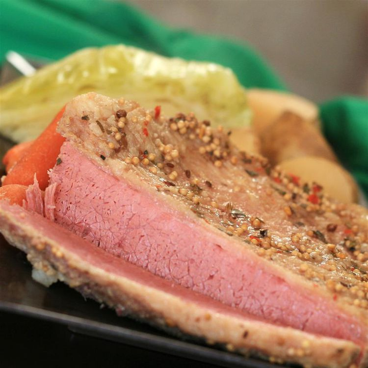

Slow cooker corned beef and cabbage

Prep Time: 20 mins
Cook Time: 10 hrs 30 mins
Total Time: 10 hrs 50 mins
Servings: 8
Description
Over a thousand reviewers loved this paired down classic recipe. The corned beef simmers first, then potatoes, carrots, and cabbage join the pot so the cooking liquid infuses everything.
Ingredients
-
½ pound baby carrots
-
½ pound small yellow potatoes (such as Dutch Yellow Pee Wee potatoes)
-
1 sweet onion, cut into bite-sized pieces
-
4 cups water
-
1 (4 3/4-pound) corned beef brisket with spice packet
-
3 tablespoons onion powder
-
3 tablespoons garlic powder
-
1 bottle Irish stout beer (such as Guinness)
-
1 medium head cabbage, quartered and leaves separated
Steps
-
Spread baby carrots, potatoes, and onion over the bottom of a slow cooker crock, then pour in water.
-
Season brisket on the lean side with onion powder and garlic powder. Place brisket, seasoned-side down, onto vegetables. Pour beer over brisket, then sprinkle spice packet over top. Cover and cook on Low for 10 hours.
-
Transfer brisket to a cutting board. Stir cabbage into the liquid and vegetable mixture remaining in the slow cooker. Cover and cook on High until cabbage is tender, 30 to 45 minutes.
-
Slice corned beef and serve with cabbage mixture.
Home